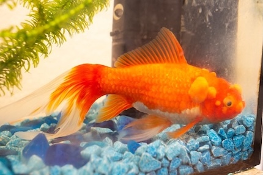
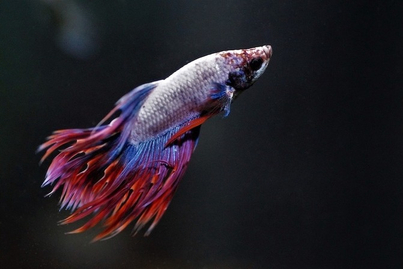
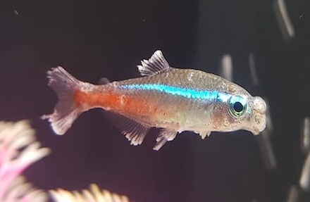
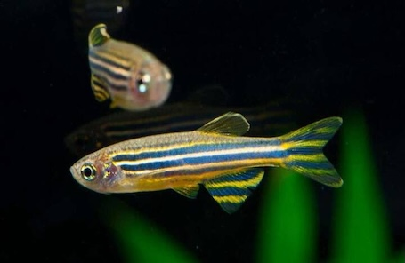
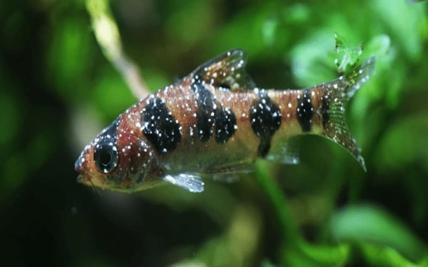
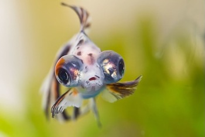
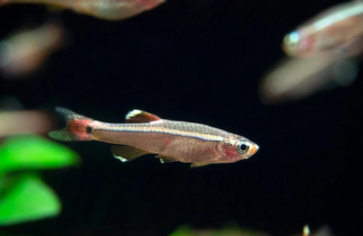

Fish Health Care
Understanding Fish Health: Your Essential Guide to Common Diseases and Symptoms! Learn to recognize signs of illness in your aquatic friends, including both treatable and untreatable conditions, to help ensure their well-being.

Neurofibromas in Goldfish
Neurofibromas form from neural tissue deep within skin layers.
Symptoms: Look out for lumps formed on goldfish. It will commonly form a "stalk" and fall off, only to grow back again.
Treatment: There is currently no effective treatment.
Fish & Tail Rot in Betta Fish
Fin & Tail rot affects the fins and tails of betta fish. It is caused by bacteria/fungi.
Symptoms: Symptoms include fins and tail appearing to melt away or discolor due to the rotting.
Treatment: It can be treated with antibiotics, such as trimethoprim, erythromycin, and sulfadimidine.


Neon Tetra Disease in Tetra
Neon Tetra disease is a degenerative condition, commonly in Tetras, caused by parasites that consumes the fish once infected, affecting its muscle tissue and often leading to infections. It is fast spreading and fatal.
Symptoms: Symptoms include discolouration of fish, cysts developed, difficulty swimming and a severe infection leading to death.
Treatment: There is no treatment currently available.
Mycobacteriosis in Zebrafish
Mycobateriosis causes granulomas in various organs and also resulting in swim bladder infections.
Symptoms: There are no specific symptoms to look out for as fish tend to appear normal but have a high mortality rate.
Treatment: There is no treatment currently available.


Ich in Barbs
Ich (white spot diesease) is a parasitic infection caused by an external protozoan parasite.
Symptoms: Look out for small white spots on the fish's body or fins.
Treatment: Treatment of choice for Ich is often copper sulfate but it is still recommended to go to a veterinarian.
Popped Eyes in Guppy
Popped eyes (Popeye) is a disorder in which a the fish’s eyes emerge from their sockets. It results from bacterial infections, physical trauma and dietary imbalances.
Symptoms: Symptoms observed are one or both eyeballs poking out of their sockets.
Treatment: It can be treated with antibiotics such as erythromycin.


Streptococcal Infection in White Cloud Minnow
Streptococcal infection is caused by bacterial infection.
Symptoms: Symptoms include fish swimming erratically, unable to hold itself towards the water surface and sinking to the bottom of the tank.
Treatment: It can be treated with antibiotics such as erythromycin.